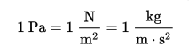

The pressure force caused by the weight of air above the surface of the Earth.
Usually measured by a barometer and given in units of kPa, inches of Hg, or millibars.
<br>Note: 1 Pascal (symbol: Pa) is defined as 1 Newton/square meter.  
<br> 
